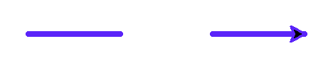

Глава 6 · Рисуем классные вещи с помощью Turtle
Поднять и опустить перо
Иногда нужно переместиться, ничего не рисуя — знакомимся с penup() и pendown().
До сих пор каждое движение черепашки оставляло линию. Но иногда нужно переместиться, ничего не рисуя — например, чтобы начать новую фигуру в другом месте экрана, не соединяя её с предыдущей.
Мысленная модель
Представьте настоящую ручку на бумаге: пока она касается листа, любое движение руки оставляет след. Поднимите ручку — и рука может двигаться куда угодно, не оставляя ни одной линии.
penup() и pendown()
pero.py
import turtle
screen = turtle.Screen()
screen.setup(width=480, height=260)
artist = turtle.Turtle()
artist.pensize(3)
artist.pencolor("#5B24F9")
artist.forward(60) # перо опущено — рисует
artist.penup()
artist.forward(60) # перо поднято — просто перемещение, без линии
artist.pendown()
artist.forward(60) # перо снова опущено — рисует
screen.exitonclick()Результат выполнения

pero_kod.py
artist.forward(60) # перо опущено — рисует
artist.penup()
artist.forward(60) # перо поднято — просто перемещение, без линии
artist.pendown()
artist.forward(60) # перо снова опущено — рисуетНе забудьте включить перо обратно
Самая частая ошибка с
penup() — забыть вызвать pendown() после него. Тогда всё, что рисуется дальше в программе, окажется невидимым — черепашка честно двигается, просто ничего не оставляет на экране.isdown() — проверить состояние пера
Если нужно узнать, опущено ли перо прямо сейчас —
artist.isdown() вернёт True или False, не меняя само состояние.Практика: penup() и pendown()
Модуль turtle открывает нативное окно Python — выполните локально в VS Code, PyCharm или Jupyter